Em um mundo ditado por grandes volumes de dados, a capacidade de encontrar informações em grandes textos de forma rápida e acurada
se torna uma habilidade algorítmica cada vez mais necessária, seja para resolver problemas da computação ou para lidar com desafios
relacionados à biotecnologia e à segurança da informação.
Esse tipo de abordagem pode abranger desde problemas muito comuns — como contar o número de vezes que determinado termo aparece em
um texto — até desafios mais complexos, como encontrar características únicas dentro de uma sequência de DNA.
À primeira vista, esse problema pode parecer trivial, especialmente quando pensamos em contextos simples e cotidianos. No entanto,
recentemente, a busca por padrões foi aplicada em um feito antes inimaginável: a recriação dos lobos terríveis, realizada pela empresa
Colossal Biosciences, por meio de uma tecnologia de bioengenharia avançada chamada CRISPR.
O método utilizado consistiu em edição genômica — ou seja, a identificação de fragmentos específicos na cadeia de DNA de uma espécie e
a alteração de determinadas bases por outras possíveis, como substituir um “A” por um “T” ou um “C” por um “G”.No caso dos lobos terríveis,
o DNA de lobos comuns foi modificado com base em informações obtidas de um fóssil preservado. Com apenas 14 alterações em 20 genes, os
cientistas conseguiram reconstruir uma sequência genética idêntica à da espécie extinta.
Solucionando o problema: Os Algoritimos de Knuth-Morris-Pratt e o algoritimo ingênuo
Para encontrar essas sequências específicas no DNA, é necessário utilizar algoritmos de busca por padrões. O mais simples deles é o algoritmo
ingênuo, que compara o padrão desejado com cada parte do texto (ou DNA), letra por letra, até encontrar uma correspondência. Já o algoritmo
Knuth-Morris-Pratt (KMP) melhora esse processo ao evitar comparações repetidas, usando informações do próprio padrão para avançar mais
rapidamente no texto. Enquanto o método ingênuo pode ser lento em casos grandes, o KMP é muito mais eficiente, especialmente quando lidamos
com sequências longas e repetitivas — como ocorre em genomas.
Dessa forma, precisamos entender o princípio por trás desses algoritimos para solucionarmos o problema,e, por isso, começaremos com a força
bruta do algoritimo ingênuo.
Aprofundando no Algoritimo ingênuo
Tendo visto o problema como um todo, vamos entender o princípio básico de busca por padrões, a “força bruta”.
Pensemos, primeiro, na abordagem de busca de padrão mais simples, que é, dado um padrão desejado, vamos buscar um trecho
onde a ordem e o número de caracteres seja extamente igual ao do padrão desejado.
Exercício
Dado esse princípio de funcionamento, pense em quais argumentos o algoritimo ingênuo recebe: algoritimo_ingenuo(???){...}
Gabarito
Como você deve ter imaginado, ele não precisa receber muitas coisas, apenas as 2 strings e seus tamanhos:
algoritimo_ingênuo(char string[], char substring[], int n, int m){...}
Agora vamos desenvolver mais este código e tentar montar a estrutura do loop principal do algoritimo.
Pensando no princípio de funcionamento do algoritmo, temos que ele percorre toda a string principal, já tendo uma sequência desejada (o padrão). Se o caractere atual da string não for compatível com o primeiro caractere do padrão, o algoritmo simplesmente avança para a próxima posição, pois já se sabe que não há um padrão começando ali.
Em alto nível, essa seria a descrição que se adequaria da melhor forma em algo como:
void algoritimo_ingenuo(char string[], char substring[], int n, int m){
// para cada i em (0, 1, 2, ..., n - m)
// verifica se a substring ocorre a partir da posição i
// se for igual ao primeiro algoritimo da substring, a sequência inicia
}
Iniciar com o loop principal é um bom começo, mas não demora muito até percebermos que o código não consegue indentificar onde termina, precisamos de outro índice para isso, verificando a compatibilidade do início ao fim. Assim, precisamos expandir o raciocínio para algo como:
void algoritimo_ingenuo(char string[], char substring[], int n, int m){
// para cada i em (0, 1, 2, ..., n - m)
// verifica se a substring ocorre a partir da posição i
// para cada j em (0, 1, 2, ..., m - 1)
// se string[i + j] ≠ substring[j]
// interrompe a verificação (não é uma ocorrência)
// se todos os caracteres da substring foram verificados com sucesso
// registra a posição i como ocorrência do padrão
}
Assim, o comportamento do código é algo como:
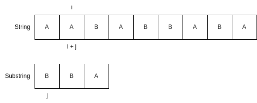
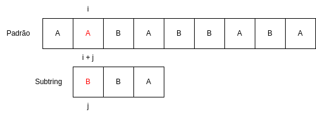
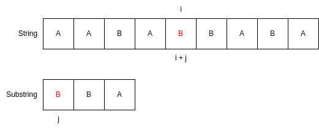
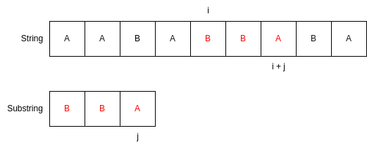
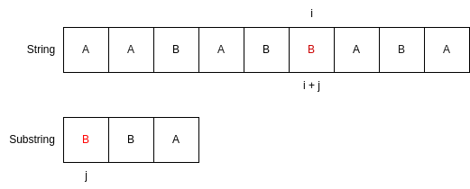
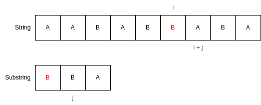
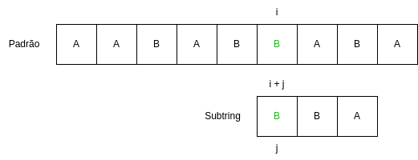
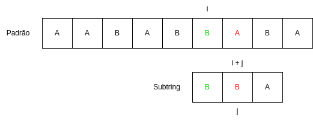
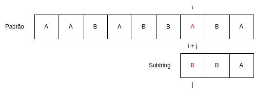
Exercício
Bom, você já tem a faca e o queijo na mão para implementar o algoritimo ingênuo, então mãos à massa!
void algoritimo_ingenuo(char string[], char substring[], int n, int m){
// complete a função!
}
Gabarito
void algoritimo_ingenuo(char string[], char substring[], int n, int m){
for (int i = 0; i <= n - m; i++) {
for (int j = 0; j < m; j++) {
if (string[i + j] != substring[j]){
break;
}
if (j == m - 1) {
printf("Padrão encontrado na posição %d\n", i);
}
}
}
}
Olhando só para exemplos mais simples, parece tranquilo, né? Mas, pensemos para casos expandidos (e mais próximos da realidade), com strings superiores
a 15 caracteres, e com baixa compatibilidade de sequência, a força bruta performaria rapidamente?
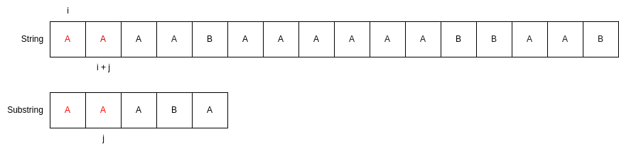
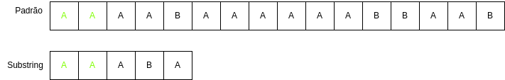
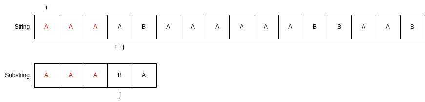
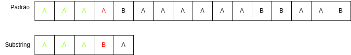
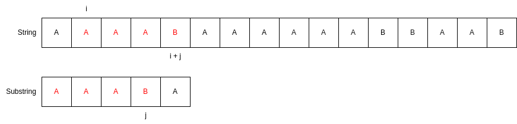
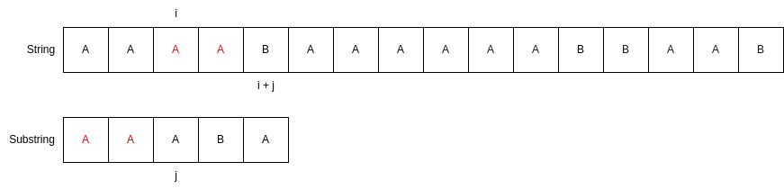
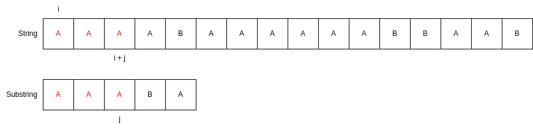
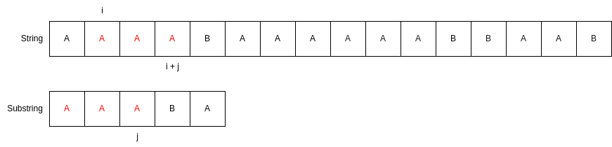
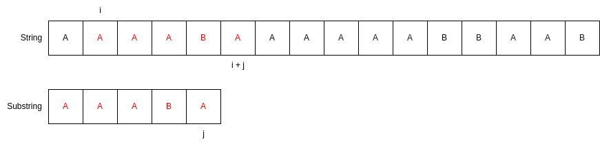
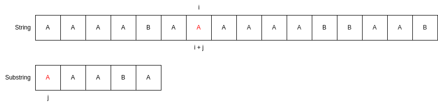
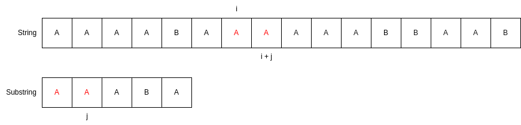
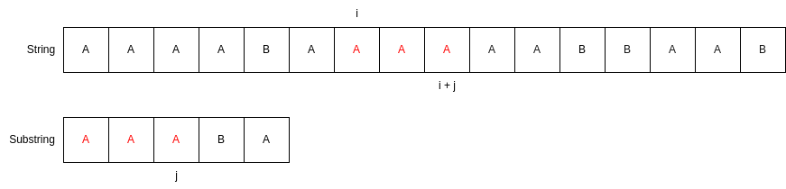
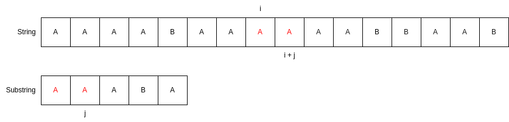
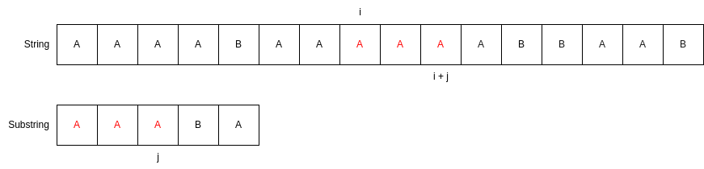
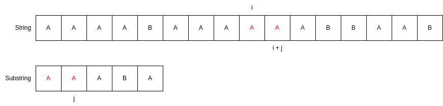
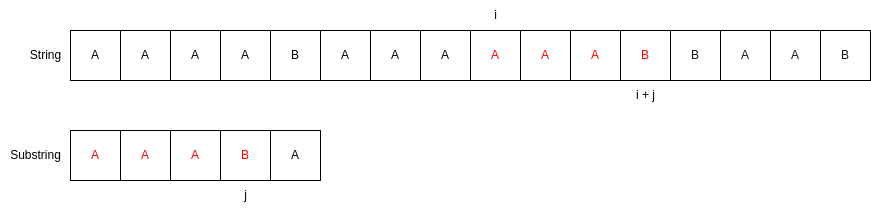
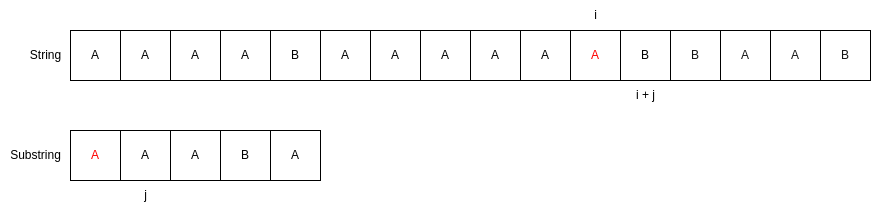
Agora, imaginemos para uma sequência de DNA, teríamos um consumo de memória absurdo!
Exercício
Para concretizar essa linha de pensamento, pense rapidamente na complexidade desse algoritimo
Gabarito
Como o algoritmo ingênuo compara cada posição da string principal, e em cada posição tenta casar a substring. Se a string principal tem tamanho n e a substring tem tamanho m, a complexidade no pior caso é (O(nm) ).
Percebe-se então, um problema bem aparente neste algoritimo, a sua redundância nas comparações. Quando uma incompatibilidade (mismatch) ocorre, o algoritmo simplesmente avança para a próxima posição na string principal e reinicia a comparação da substring do início, revisitando caracteres que já foram analisados.
Aqui esta mais uma animação para reforçar mais ainda esse defeito:
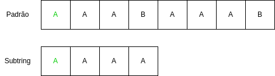
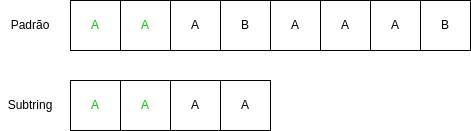
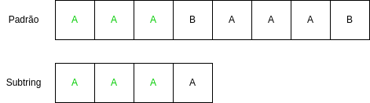
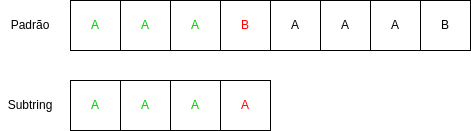
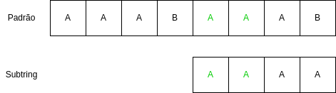
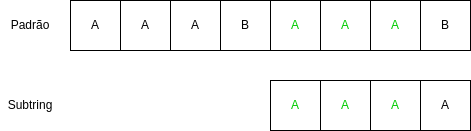
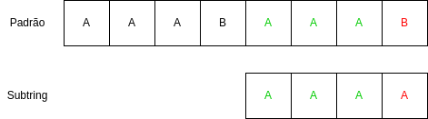
Bom, dessa forma, fica claro que existe um problema de eficiência neste algoritimo, o que nos faz pensar, como será que podemos melhorar para que ele seja menos redundante?
Como podemos melhorar o algoritimo
Bom, já ficou bem claro que o problema do Ingênuo é que ele demora devido a redundancia de ficar voltando indices quando ocorre um mismatch dentro da mesma string. Foi na busca da solução deste problema que o KMP foi criado, agora, vamos tentar pensar e entender a solução encontrada para este problema. (dica: a resposta é mais simples do que parece)!
Exercicio
Como podemos fazer o algoritmo não perder progresso?
Gabarito
Pulando caracteres que já foram comparados previamente.
Agora ficou bem claro qual é a primeira etapa do KMP: pular “casas” quando ele sabe que não vai ocorrer match. Mas quais casam são essas?
De modo simples: ele pula para casas que sabe que ainda podem dar match, ignorando as que já foram testadas e não funcionam. Explicando melhor, o código procura por um prefixo na substring que também seja um sufixo na string. Isso significa que, ao encontrar um caractere que não combina, o algoritmo pode usar o conhecimento prévio sobre a substring para avançar mais rapidamente.
Lembrando rapidamente o que são prefixos e sufixos:
Prefixo: uma sequência de caracteres que aparece no início de uma string.
Sufixo: uma sequência de caracteres que aparece no final de uma string.
Por exemplo, a palavra “paragrafo” tem como prefixo “para” e como sufixo “grafo”. O KMP utiliza essa relação para otimizar a busca, evitando comparações desnecessárias.
Para melhor visualizar isso:
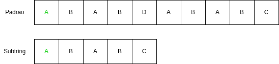
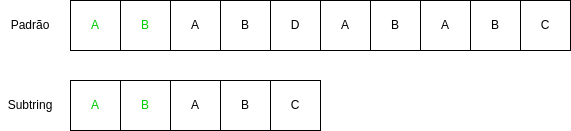
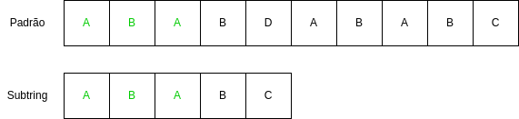
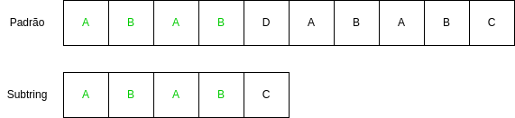
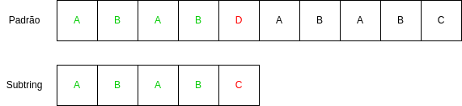
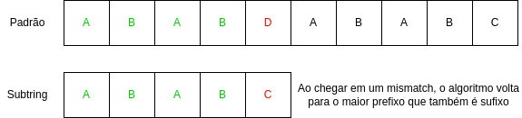
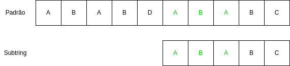
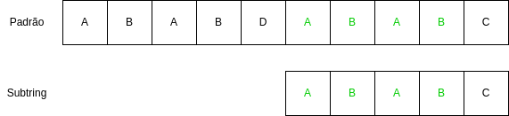
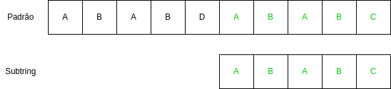
Dessa forma, fica mais claro como o KMP funciona: ele tenta casar a substring com a string, e quando ocorre uma incompatibilidade, ele não volta para o início da substring. Em vez disso, ele utiliza o conhecimento prévio sobre os prefixos e sufixos para avançar mais rapidamente.
Mas como ele faz isso? A resposta está no vetor LPS (Longest Prefix Suffix), que armazena o comprimento do maior prefixo que também é sufixo para cada posição da substring. Esse vetor é fundamental para otimizar o algoritmo KMP, permitindo que ele avance de forma eficiente sem retroceder desnecessariamente e reduzindo significativamente a sua complexidade.
Como o LPS é construído?
Para cada posição i no padrão, o algoritmo KMP calcula lps[i], que representa o comprimento do maior prefixo próprio da substring padrao[0…i] que também é um sufixo próprio dessa mesma substring.
Esse valor indica o quanto do padrão já foi reconhecido e pode ser reaproveitado, caso haja falha durante a busca no texto.
Abaixo, mostramos passo a passo a construção do vetor LPS para o padrão ABABAC.
Importante!
Lembre-se que o prefixo sempre começa da primeira letra e exclui a última, enquanto o sufixo termina na última letra e exclui a primeira.
Exemplo:
Na palavra INSPER os prefixos seriam: I, IN, INS, INSP e INSPE.
Enquanto os sufixos seriam: R, ER, PER, SPER, NSPER.
Exercício
Vamos montar o vetor LPS de um texto na prática agora. Tente acertar qual será o maior sufixo que também é prefixo da substring, isto é, padrão[0…i], depois complete o vetor com o tamanho deste elemento.
Não temos prefixos ou sufixos em palavras de uma letra, por isso começamos sempre com 0 na primeira posição do vetor.
i = 1
Prefixo: “A”
Sufixo: “B”
Não temos igualdade, então colocamos 0 novamente no vetor.
i = 2
Prefixos: “A”, “AB”
Sufixos: “A”, “BA”
“A” se repete e tem tamanho 1, então colocamos 1 na próxima casa do vetor.
i = 3
Prefixos: “A”, “AB”, “ABA”
Sufixos: “B”, “AB”, “BAB”
LPS[i] = 2
i = 4
Prefixos: “A”, “AB”, “ABA”, “ABAB”
Sufixos: “A”, “BA”, “ABA”, “BABA”
LPS[i] = 3
i = 5
Prefixos: “A”, “AB”, “ABA”, “ABAB”, “ABABA”
Sufixos: “C”, “AC”, “BAC”, “ABAC”, “BABAC”
LPS[i] = 0
3. Construindo o algoritmo do vetor LPS
Agora que entedemos como o algoritmo funciona na prática, vamos montar o código em C. Tente pensar em qual é o próximo passo para construir o algoritmo, não em código, mas efetivamente o que o algoritmo irá fazer. Volte para o exercicío anterior sempre que precisar. Depois que fizer isso, pense na tradução em código.
Passo 0
void lps(char padrao[], int m, int* lps){
// Restante do código
}
O algoritmo recebe o padrão, o tamanho do padrao e o vetor LPS, o qual vamos modificar na função.
Passo 1
void lps(char padrao[], int m, int* lps){
// iniciamos definindo lps[0] como 0
}
Tradução para código
void lps(char padrao[], int m, int* lps){
lps[0] = 0;
}
Passo 2
void lps(char padrao[], int m, int* lps){
// definimos um contador i que vai percorrer o padrao.
// também ja podemos definir uma variável para guardarmos o comprimento do prefixo/sufixo igual atual.
}
Tradução para código
void lps(char padrao[], int m, int* lps){
lps[0] = 0;
i = 1 // i começa em 1 porque já sabemos o que tem na posição 0.
comprimento = 0
}
Passo 3
void lps(char padrao[], int m, int* lps){
// Percorre o padrão até o final
}
Tradução para código
void lps(char padrao[], int m, int* lps){
lps[0] = 0;
i = 1
comprimento = 0
while (i < m) {
}
}
Passo 4
void lps(char padrao[], int m, int* lps){
// Se o caractere atual bate com o caractere em 'comprimento'
// Significa que estendemos um prefixo que também é sufixo
}
Tradução para código
void lps(char padrao[], int m, int* lps){
lps[0] = 0;
i = 1
comprimento = 0
while (i < m) {
if (padrao[i] == padrao[comprimento]) {
comprimento++;
lps[i] = comprimento;
i++;
}
}
}
Passo 5
void lps(char padrao[], int m, int* lps){
// Se o caractere atual nao bate com o caractere do comprimento, tentamos com um comprimento menor, até que o comprimento seja 0.
}
Tradução para código
void lps(char padrao[], int m, int* lps){
lps[0] = 0;
i = 1
comprimento = 0
while (i < m) {
if (padrao[i] == padrao[comprimento]) {
comprimento++;
lps[i] = comprimento;
i++;
}
else {
if (comprimento != 0) {
comprimento = lps[comprimento - 1]; // Podemos usar recursão para tornar o algoritmo mais eficiente.
} else {
lps[i] = 0;
i++;
}
}
}
}
RESUMO
void lps(char padrao[], int m, int* lps) {
// O primeiro caractere nunca tem prefixo próprio → lps[0] = 0
lps[0] = 0;
// comprimento guarda o tamanho do maior prefixo próprio que também é sufixo
int comprimento = 0;
// Começamos a análise a partir do segundo caractere
int i = 1;
while (i < m) {
// Caso os caracteres batam: padrao[i] estende o prefixo já conhecido
if (padrao[i] == padrao[comprimento]) {
comprimento++; // aumentamos o comprimento do prefixo/sufixo atual
lps[i] = comprimento; // salvamos esse valor no vetor LPS
i++; // avançamos no padrão
}
else {
// Se já tínhamos um prefixo parcial, tentamos recuar para um menor
if (comprimento != 0) {
comprimento = lps[comprimento - 1];
// Note que não avançamos i — vamos tentar casar novamente
}
else {
// Se não há mais prefixo a testar, o valor de lps[i] é 0
lps[i] = 0;
i++;
}
}
}
}
O KMP
Como visto anteriormente, por meio do uso do LPS como uma função auxiliar para o KMP, podemos otimizar ele muito, de maneira a reduzir a redundância ao extremo.
Vamos tentar ver isso em prática, agora, comparando os dois usando os mesmos parametros:
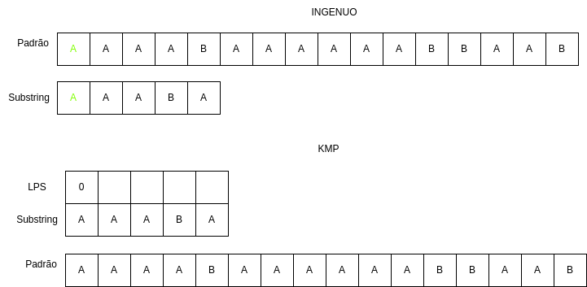
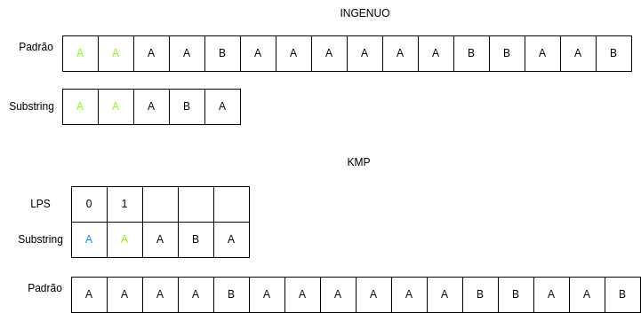
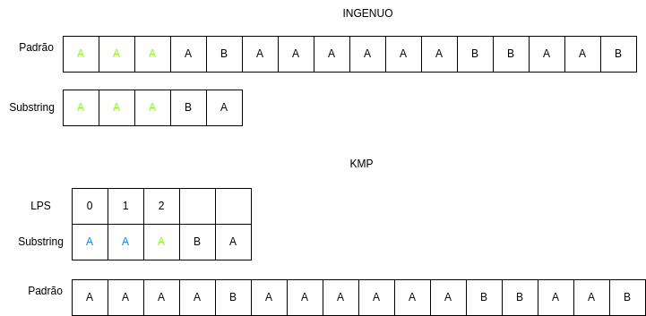
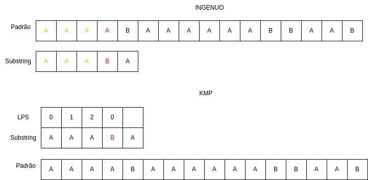
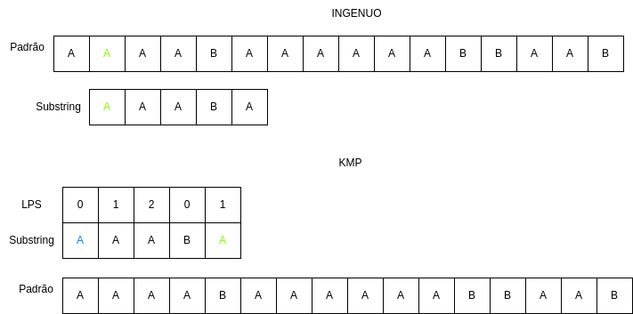
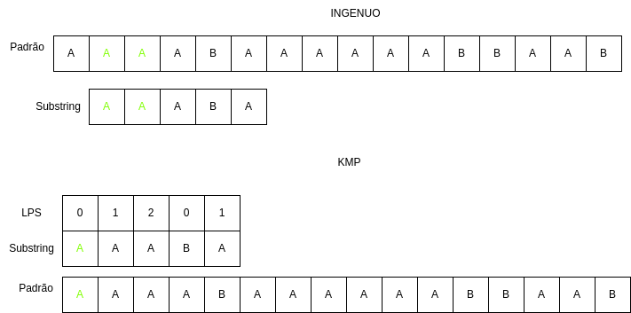
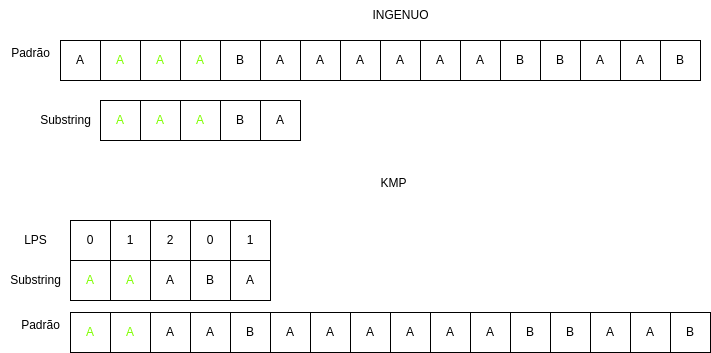
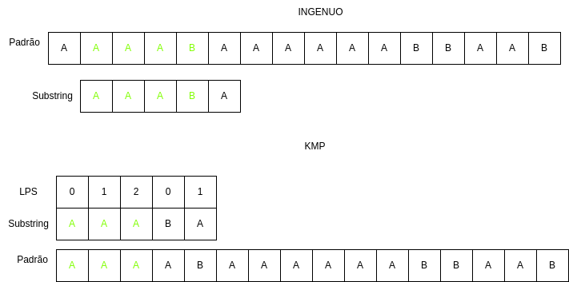
Como puderam ver, o KMP é muito mais eficiente do que o ingenuo, no exemplo dado, ele completou a análise com quase a metade das iterações utilizadas pelo ingenuo.
Por fim, vamos dar uma olhada em como ficou a versão final do KMP, com o LPS:
void kmp(char string[], char substring[], int n, int m) {
int lps[m];
lps(substring, m, lps);
int i = 0;
int j = 0;
while (i < n) {
if (string[i] == substring[j]) {
i++;
j++;
}
if (j == m) {
printf("Padrão encontrado na posição %d\n", i - j);
j = lps[j - 1];
} else if (i < n && string[i] != substring[j]) {
if (j != 0) {
j = lps[j - 1];
} else {
i++;
}
}
}
}
Exercício
A partir do código fornecido, tente estimar a nova complexidade do algoritmo KMP.
Gabarito
Agora que estamos usando o lps, o KMP alcança uma complexidade de (O(n + m)). Isso ocorre porque a construção do vetor LPS, que pré-processa o padrão, é realizada em (O(m)), e a busca na string principal é feita em (O(n)), sem retrocessos desnecessários.